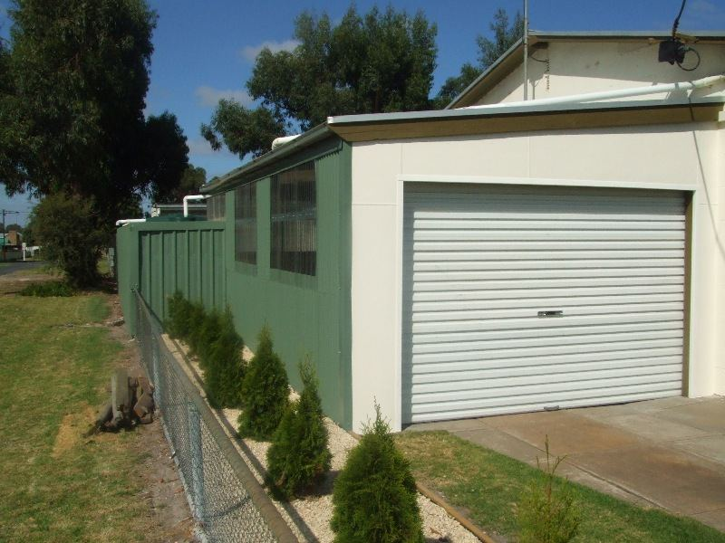

Autumn
Although , with this stupid extended daylight saving, it is hard to throw the covers off and dress to go to take Banjo for a run in the morning, the crisp air and the sun rising over the Pines makes it worthwhile as one pedals down the breaks. The startled kangaroos hop away in front of you and as long as they keep hopping Banjo will keep chasing but if one stops then the Kelpie crouch comes in to vogue as he gives them the orange eye and the feet are placed slowly one in front of the other as he pretends to herd them up but if the truth is known he is actually shit scared as they weigh more than him....I give a shout " Hello Skippy" and they take off...Banjo then chases until I call him off and he gallops back , tail in the air, having done his job, he thinks! The mist rises as the sun warms the ground and the Currawongs whistle which further stirs Banjo, Autumn is the best time around here.
And then I come home to Kanga Bangas and baked beans before grabbing the paint brushes to continue my seemingly endless task of finishing the car port. 

Well the car port IS finished and the painting is done but now I have to paint the back wall as it looks shabby against the sparkling carport area. Still footy is on the radio and the sun shines all day so the task is not that daunting. I reckon autumn is the best time of the year and also the best time of your life.
Realistically three quarters of my life is gone, that's if I am as healthy as I think I am, but its great not having those strong opinions on everything and young kids to worry about and to drive at the speed limit and not think its an affront on my masculinity. Actually its great not having any masculinity, another job which doesn't have to be done just when there's footy or a good programme on TV. That's the best thing about a long marriage , the pressure is off and just the arguments remain.
Talking about 38 years of marriage we actually did something for our wedding anniversary and went to the Comedy Club in Melbourne.

This was a value show and we really enjoyed ourselves and the company of Jim and Tony. Even if half of the last act was making fun of me owning a kelpie. "What you don't have cattle what does the Kelpie do play.. solitaire all day?" Then on Sunday we had a Weber roast, which was in Jim's adequate care and Bill and Olivia and the grandkids came to play backyard cricket and with Grandma Keenan on the playground equipment behind Jims place. We caught up with Kim and Matilda too so it was a great family affair. Monday was spent shopping as it was Nuran's birthday, what better day is it for woman than a shopping day!
The bike which cost $60 so is the top of the range job, has started to show the effects of a 30km ride a day by me and a 10km ride by John every other day and has a growling sound when put under pedal pressure. I think, like me its a bit cranky. or rather its cranks are a bit like me , worn out. So Banjo will have to have a spell and the old treadly will have to got to its mechanic for a refit soon. I might lash out and actually buy a bike one day that is more suited to the lifestyle we lead in Tarpeena.
I have a dog that is probably the best we have ever had, after 38 years, so I should get a bike that is suited to the needs of a kelpie and extend my own existence in the process

It was good today as there was a kangaroo on the road and trapped between two fences it bounded away with Banjo after it until it turned turtle and came towards me, still with Banjo after it- they must have done a synchronized U turn, and when it seemed kangaroo ,bike, me and Banjo were all going to end in one heap in the middle of the road, Skippy turned left and flew the fence with at least four feet clearance! What a sight! Then it hopped away to the safety of the Pines through Bannister's paddocks. Banjo looked at the fence but , wisely, didn't go through and we continued on our merry way There was a rabbit further down the road but unless they run Banjo ignores them as his Palau is easier to eat than raw rabbit.
The lawns are cut ,the carport is painted, the home brew is bubbling the Cats won and , bonus, so did the Crows in the words of the song.. "It's got to be perfect!"
Anyway tomorrow is another day and the forecast is fine so I must cast this tale to the web site and ready myself for another great day.
29.03.09